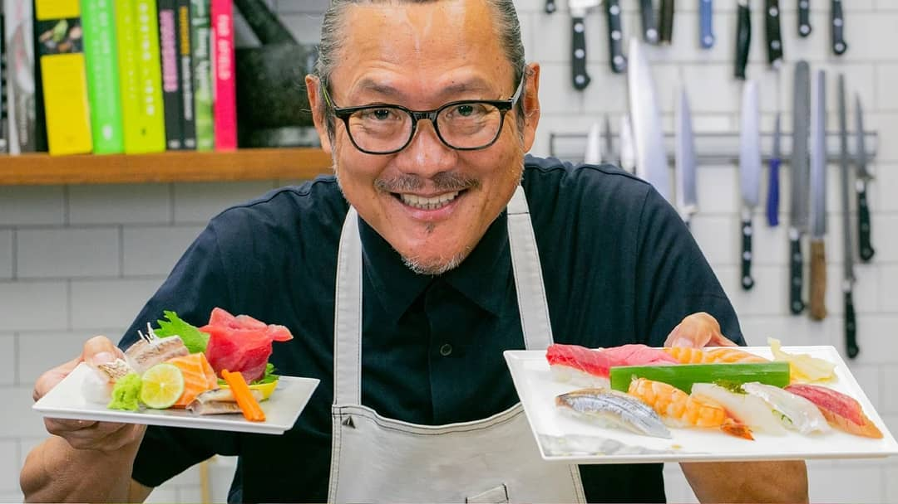
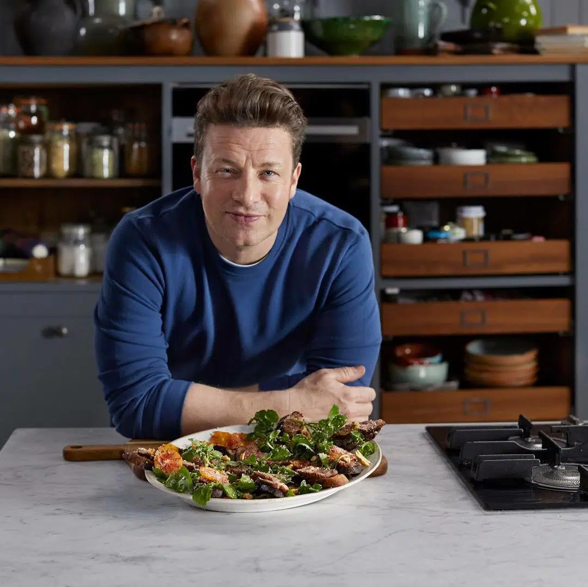
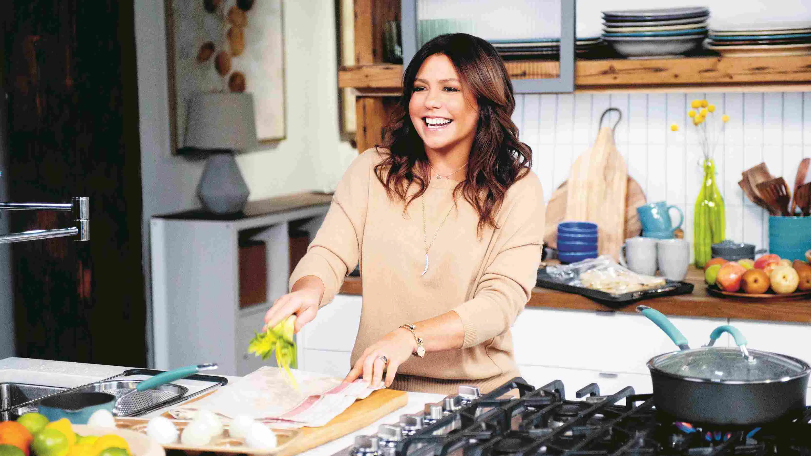

Fieri is an Emmy award-winning chef who owns three California restaurants and also licenses out his name and infamous “Flavortown” catchphrase to restaurants across the country.
He is one of the most famous chefs on TV in the world because of it, and has won several times on Iron Chef America as well. He brought his signature flavor to the States when he opened up his restaurant Morimoto in Philadelphia in the early 2000s.
British chef Jamie Oliver is one of the most beloved figures in the business, known for his casual and relaxed approach to modern cuisine. He has featured in more than 30 series, including the award-winning The Naked Chef, Jamie Oliver’s Food Revolution, and Jamie’s Kitchen.
If you use phrases like ‘Oh my gravy!’ or ‘yum-o’ while cooking, you should thank American chef Rachael Ray. One of her catchphrases, ‘EVOO’ (extra virgin olive oil), was even added to the Oxford American College Dictionary. It’s a phrase that Ray has used heavily on the Rachael Ray and 30-Minute Meals series.